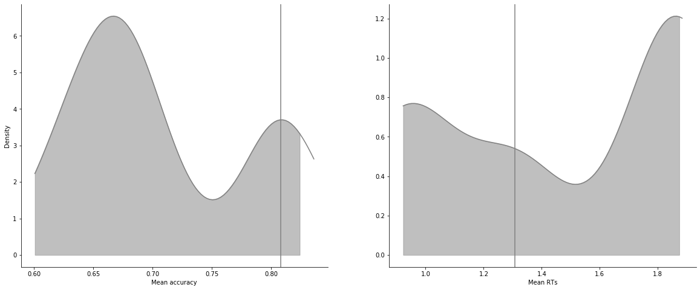
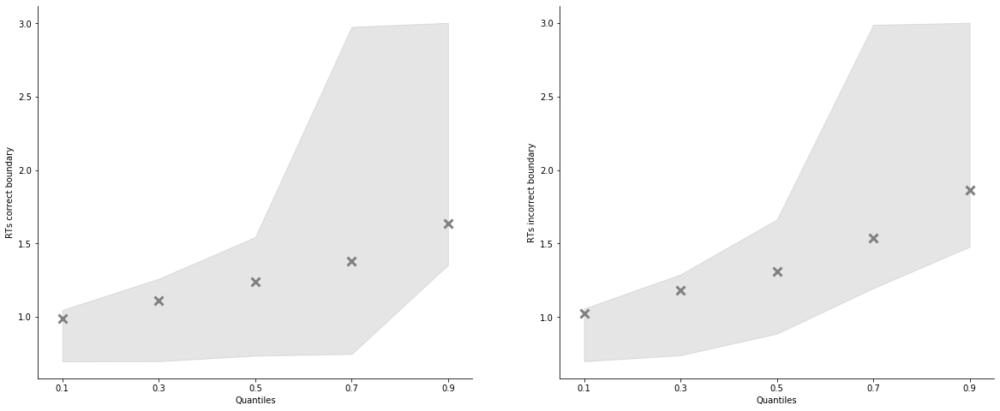
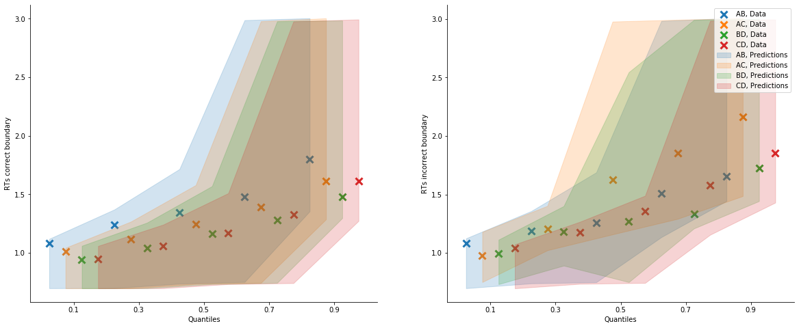

[1]:
import rlssm
import pandas as pd
import os
[2]:
def f(x):
return x
[3]:
par_path = os.path.abspath(os.path.join(os.getcwd(), os.pardir))
data_path = os.path.join(par_path, 'data/data_experiment.csv')
data = pd.read_csv(data_path, index_col=0)
data = data[data.participant < 4].reset_index(drop=True)
data['block_label'] += 1
data['S_cor'] = f(data['f_cor'].values)
data['S_inc'] = f(data['f_inc'].values)
data.head()
INFO:numexpr.utils:NumExpr defaulting to 4 threads.
[3]:
| participant | block_label | trial_block | f_cor | f_inc | cor_option | inc_option | times_seen | rt | accuracy | S_cor | S_inc | |
|---|---|---|---|---|---|---|---|---|---|---|---|---|
| 0 | 1 | 1.0 | 1.0 | 43.0 | 39.0 | 2 | 1 | 1.0 | 1.244082 | 0.0 | 43.0 | 39.0 |
| 1 | 1 | 1.0 | 2.0 | 60.0 | 50.0 | 4 | 3 | 1.0 | 1.101821 | 1.0 | 60.0 | 50.0 |
| 2 | 1 | 1.0 | 3.0 | 44.0 | 36.0 | 4 | 2 | 2.0 | 1.029923 | 0.0 | 44.0 | 36.0 |
| 3 | 1 | 1.0 | 4.0 | 55.0 | 55.0 | 4 | 3 | 2.5 | 1.368007 | 0.0 | 55.0 | 55.0 |
| 4 | 1 | 1.0 | 5.0 | 52.0 | 49.0 | 4 | 3 | 3.5 | 1.039329 | 1.0 | 52.0 | 49.0 |
[4]:
model = rlssm.ARDModel_2A(2)
INFO:pystan:COMPILING THE C++ CODE FOR MODEL anon_model_0d2d98640c279e09ff5fcb5b24f13b1c NOW.
[5]:
# sampling parameters
n_iter = 700
n_chains = 2
n_thin = 5
[6]:
model_fit = model.fit(data,
thin = n_thin,
iter = n_iter,
chains = n_chains)
WARNING:pystan:Maximum (flat) parameter count (1000) exceeded: skipping diagnostic tests for n_eff and Rhat.
To run all diagnostics call pystan.check_hmc_diagnostics(fit)
WARNING:pystan:111 of 140 iterations ended with a divergence (79.3 %).
WARNING:pystan:Try running with adapt_delta larger than 0.8 to remove the divergences.
WARNING:pystan:25 of 140 iterations saturated the maximum tree depth of 10 (17.9 %)
WARNING:pystan:Run again with max_treedepth larger than 10 to avoid saturation
WARNING:pystan:Chain 1: E-BFMI = 0.0308
WARNING:pystan:Chain 2: E-BFMI = 0.101
WARNING:pystan:E-BFMI below 0.2 indicates you may need to reparameterize your model
Checks MCMC diagnostics:
n_eff / iter looks reasonable for all parameters
111.0 of 140 iterations ended with a divergence (79.28571428571429%)
Try running with larger adapt_delta to remove the divergences
25 of 140 iterations saturated the maximum tree depth of 10 (17.857142857142858%)
Run again with max_depth set to a larger value to avoid saturation
Chain 0: E-BFMI = 0.03078366060277471
Chain 1: E-BFMI = 0.10068744433758295
E-BFMI below 0.2 indicates you may need to reparameterize your model
[7]:
model_fit.rhat.describe()
[7]:
| rhat | |
|---|---|
| count | 25.000000 |
| mean | 2.590907 |
| std | 2.014514 |
| min | 1.028313 |
| 25% | 1.223454 |
| 50% | 2.019961 |
| 75% | 2.616149 |
| max | 9.047056 |
[8]:
model_fit.rhat.head()
[8]:
| rhat | variable | |
|---|---|---|
| 0 | 1.984140 | mu_threshold |
| 1 | 1.802704 | mu_ndt |
| 2 | 1.028313 | mu_v0 |
| 3 | 2.395715 | mu_ws |
| 4 | 2.019961 | mu_wd |
[9]:
model_fit.waic
[9]:
{'lppd': -856.9264351457698,
'p_waic': 87223.53153430103,
'waic': 176160.9159388936,
'waic_se': 803.7490109676414}
Posteriors¶
[10]:
model_fit.samples
[10]:
| chain | draw | transf_mu_threshold | transf_mu_ndt | transf_mu_v0 | transf_mu_ws | transf_mu_wd | threshold_sbj[1] | threshold_sbj[2] | threshold_sbj[3] | ... | ndt_sbj[3] | v0_sbj[1] | v0_sbj[2] | v0_sbj[3] | ws_sbj[1] | ws_sbj[2] | ws_sbj[3] | wd_sbj[1] | wd_sbj[2] | wd_sbj[3] | |
|---|---|---|---|---|---|---|---|---|---|---|---|---|---|---|---|---|---|---|---|---|---|
| 0 | 0 | 23 | 2.582169 | 0.910173 | 3.382728 | 0.758453 | 1.205245 | 0.740924 | 2.413726 | 1.651632 | ... | 0.746160 | 9.020855 | 0.382485 | 0.331699 | 0.432137 | 0.020950 | 0.016224 | 0.009800 | 0.028045 | 0.039743 |
| 1 | 0 | 69 | 2.015361 | 0.886543 | 0.364359 | 0.179985 | 2.231970 | 2.044102 | 2.264648 | 1.785070 | ... | 0.701929 | 1.966548 | 0.743557 | 0.712577 | 0.000211 | 0.015671 | 0.012293 | 0.056226 | 0.029050 | 0.039661 |
| 2 | 0 | 58 | 1.550178 | 0.864366 | 0.921071 | 0.353680 | 4.004068 | 1.834008 | 1.597395 | 1.629180 | ... | 0.758828 | 1.163872 | 0.929824 | 1.274350 | 0.006691 | 0.006491 | 0.005475 | 0.062878 | 0.033997 | 0.027965 |
| 3 | 0 | 38 | 2.695170 | 0.880559 | 3.578127 | 0.583413 | 1.688411 | 1.811315 | 3.177351 | 1.438878 | ... | 0.784686 | 9.465636 | 1.278337 | 0.145598 | 0.495975 | 0.016117 | 0.015814 | 0.226230 | 0.031114 | 0.043074 |
| 4 | 0 | 32 | 2.178012 | 0.856682 | 3.139016 | 0.753589 | 1.490890 | 1.988046 | 2.517860 | 1.681794 | ... | 0.729534 | 11.835620 | 0.169717 | 0.028630 | 0.499530 | 0.023995 | 0.019347 | 0.001661 | 0.036656 | 0.039016 |
| ... | ... | ... | ... | ... | ... | ... | ... | ... | ... | ... | ... | ... | ... | ... | ... | ... | ... | ... | ... | ... | ... |
| 135 | 1 | 61 | 0.865379 | 0.770088 | 2.728646 | 0.064980 | 0.584759 | 1.503840 | 0.789935 | 0.490402 | ... | 0.699932 | 1.265592 | 2.993728 | 3.159279 | 0.002665 | 0.140709 | 1.275337 | 0.048138 | 0.491466 | 4.018529 |
| 136 | 1 | 60 | 0.867437 | 0.771932 | 2.722040 | 0.065988 | 0.582424 | 1.505874 | 0.795941 | 0.493854 | ... | 0.702177 | 1.210596 | 2.982798 | 3.145386 | 0.002673 | 0.143229 | 1.292260 | 0.048115 | 0.489052 | 3.992885 |
| 137 | 1 | 37 | 0.861765 | 0.787904 | 2.715025 | 0.101080 | 0.751380 | 1.479072 | 0.821294 | 0.484671 | ... | 0.702368 | 1.379072 | 2.901846 | 3.198473 | 0.002363 | 0.223431 | 1.820637 | 0.051885 | 0.757069 | 4.562070 |
| 138 | 1 | 22 | 0.857979 | 0.793983 | 2.677137 | 0.116656 | 0.831147 | 1.496439 | 0.855991 | 0.473847 | ... | 0.701683 | 1.392453 | 2.858162 | 3.119191 | 0.002160 | 0.269583 | 2.348819 | 0.050694 | 0.917254 | 4.737322 |
| 139 | 1 | 68 | 0.868517 | 0.771493 | 2.707579 | 0.061893 | 0.587968 | 1.522343 | 0.813211 | 0.488990 | ... | 0.697807 | 1.336668 | 2.952512 | 3.162824 | 0.002160 | 0.135818 | 1.313743 | 0.055163 | 0.480794 | 4.017613 |
140 rows × 22 columns
[11]:
model_fit.trial_samples
[11]:
OrderedDict([('drift_cor_t',
array([[ 44.49525678, 56.65388064, 43.67018243, ..., 2.38962617,
2.38962617, 2.4423274 ],
[ 2.2087805 , 2.55205543, 2.43326344, ..., 2.3959818 ,
2.3959818 , 2.48365274],
[ 1.96401223, 2.52861834, 2.20214443, ..., 2.15805733,
2.15805733, 2.24860599],
...,
[ 1.78038359, 2.15785832, 1.98319639, ..., 235.46588071,
235.46588071, 241.89049663],
[ 1.77235909, 2.13700583, 1.97081406, ..., 287.84213829,
287.84213829, 290.38938284],
[ 1.73447862, 2.12594958, 1.95080945, ..., 180.19742041,
180.19742041, 188.46179235]])),
('drift_inc_t',
array([[ 44.41685897, 56.45788612, 43.51338681, ..., 1.35630346,
1.35630346, 1.01157287],
[ 1.7589694 , 1.42752767, 1.53364123, ..., 1.3647926 ,
1.3647926 , 1.05585231],
[ 1.46098554, 1.2710516 , 1.19609104, ..., 1.43095802,
1.43095802, 1.24185309],
...,
[ 1.36530566, 1.1201635 , 1.15304053, ..., 116.85207188,
116.85207188, 77.6559921 ],
[ 1.36680859, 1.12312958, 1.15971306, ..., 164.67176049,
164.67176049, 119.84578282],
[ 1.29317506, 1.02269068, 1.06820233, ..., 75.73949082,
75.73949082, 43.827736 ]])),
('threshold_t',
array([[0.74092382, 0.74092382, 0.74092382, ..., 1.65163179, 1.65163179,
1.65163179],
[2.04410174, 2.04410174, 2.04410174, ..., 1.78506985, 1.78506985,
1.78506985],
[1.83400823, 1.83400823, 1.83400823, ..., 1.62917979, 1.62917979,
1.62917979],
...,
[1.47907231, 1.47907231, 1.47907231, ..., 0.48467125, 0.48467125,
0.48467125],
[1.49643857, 1.49643857, 1.49643857, ..., 0.47384684, 0.47384684,
0.47384684],
[1.52234277, 1.52234277, 1.52234277, ..., 0.48899048, 0.48899048,
0.48899048]])),
('ndt_t',
array([[2.96275151, 2.96275151, 2.96275151, ..., 0.74615968, 0.74615968,
0.74615968],
[0.62334757, 0.62334757, 0.62334757, ..., 0.70192911, 0.70192911,
0.70192911],
[0.63797503, 0.63797503, 0.63797503, ..., 0.75882784, 0.75882784,
0.75882784],
...,
[0.73776219, 0.73776219, 0.73776219, ..., 0.70236826, 0.70236826,
0.70236826],
[0.73857086, 0.73857086, 0.73857086, ..., 0.70168288, 0.70168288,
0.70168288],
[0.72624588, 0.72624588, 0.72624588, ..., 0.69780664, 0.69780664,
0.69780664]]))])
[12]:
model_fit.plot_posteriors(height=5, show_intervals='HDI');

[13]:
pp_rt, pp_acc = model_fit.get_posterior_predictives(n_posterior_predictives=100)
[14]:
pp_rt
[14]:
array([[2.97675151, 2.97775151, 2.97875151, ..., 1.11615968, 1.49215968,
1.14415968],
[1.37634757, 1.63434757, 1.07734757, ..., 1.60092911, 1.02192911,
1.13692911],
[1.25597503, 1.87897503, 1.17197503, ..., 1.23982784, 1.64982784,
1.37182784],
...,
[0.99267384, 1.16567384, 1.70067384, ..., 0.70197053, 0.70197053,
0.70197053],
[1.64516259, 1.37516259, 1.24216259, ..., 0.69958314, 0.69958314,
0.70058314],
[1.50051811, 1.70251811, 1.52451811, ..., 0.70032589, 0.69932589,
0.69932589]])
[15]:
pp_acc
[15]:
array([[0., 1., 1., ..., 1., 1., 1.],
[1., 1., 0., ..., 1., 1., 1.],
[1., 1., 1., ..., 1., 1., 1.],
...,
[1., 1., 0., ..., 1., 1., 1.],
[1., 1., 1., ..., 1., 1., 1.],
[0., 1., 1., ..., 1., 1., 1.]])
[16]:
pp_summary = model_fit.get_posterior_predictives_summary(n_posterior_predictives=100)
pp_summary
[16]:
| mean_accuracy | mean_rt | skewness | quant_10_rt_incorrect | quant_30_rt_incorrect | quant_50_rt_incorrect | quant_70_rt_incorrect | quant_90_rt_incorrect | quant_10_rt_correct | quant_30_rt_correct | quant_50_rt_correct | quant_70_rt_correct | quant_90_rt_correct | |
|---|---|---|---|---|---|---|---|---|---|---|---|---|---|
| sample | |||||||||||||
| 1 | 0.620306 | 1.882399 | 0.452684 | 1.017250 | 1.281012 | 1.591160 | 2.975752 | 2.978752 | 1.056886 | 1.226386 | 1.459612 | 2.973752 | 2.977752 |
| 2 | 0.698192 | 1.316847 | 1.053264 | 0.981065 | 1.132571 | 1.242929 | 1.419077 | 1.673096 | 0.989548 | 1.154929 | 1.277403 | 1.430593 | 1.726924 |
| 3 | 0.635605 | 1.345576 | 1.195317 | 1.004543 | 1.194831 | 1.334901 | 1.511372 | 1.779869 | 0.967269 | 1.143228 | 1.264869 | 1.429461 | 1.747644 |
| 4 | 0.681502 | 1.866498 | 0.470096 | 1.032780 | 1.205380 | 1.372180 | 2.173982 | 2.986982 | 1.036180 | 1.227534 | 1.499186 | 2.978982 | 2.984982 |
| 5 | 0.645341 | 1.879566 | 0.438797 | 1.033388 | 1.293539 | 1.603534 | 2.973176 | 2.981176 | 1.030891 | 1.219191 | 1.415912 | 2.970276 | 2.979876 |
| ... | ... | ... | ... | ... | ... | ... | ... | ... | ... | ... | ... | ... | ... |
| 96 | 0.820584 | 0.918880 | 1.906830 | 0.702963 | 0.746689 | 1.050703 | 1.234703 | 1.615503 | 0.702963 | 0.703963 | 0.737289 | 0.750289 | 1.314403 |
| 97 | 0.828929 | 0.931608 | 2.003079 | 0.705172 | 0.742399 | 0.965781 | 1.202381 | 1.632781 | 0.704172 | 0.705172 | 0.739399 | 0.763399 | 1.371781 |
| 98 | 0.812239 | 0.929096 | 1.703086 | 0.733492 | 0.745692 | 1.086674 | 1.305074 | 1.695674 | 0.701971 | 0.701971 | 0.736692 | 0.749692 | 1.340674 |
| 99 | 0.788595 | 0.940793 | 1.718931 | 0.700583 | 0.746424 | 0.774824 | 1.217063 | 1.601963 | 0.699583 | 0.700583 | 0.739824 | 0.769824 | 1.415163 |
| 100 | 0.799722 | 0.936806 | 1.944183 | 0.700326 | 0.752323 | 0.956018 | 1.209618 | 1.665018 | 0.699326 | 0.700326 | 0.741423 | 0.771223 | 1.388718 |
100 rows × 13 columns
[17]:
model_fit.plot_mean_posterior_predictives(n_posterior_predictives=100, figsize=(20,8), show_intervals='HDI');

[18]:
model_fit.plot_quantiles_posterior_predictives(n_posterior_predictives=100, kind='shades');

[19]:
import numpy as np
[20]:
data['choice_pair'] = 'AB'
data.loc[(data.cor_option == 3) & (data.inc_option == 1), 'choice_pair'] = 'AC'
data.loc[(data.cor_option == 4) & (data.inc_option == 2), 'choice_pair'] = 'BD'
data.loc[(data.cor_option == 4) & (data.inc_option == 3), 'choice_pair'] = 'CD'
data['block_bins'] = pd.cut(data.trial_block, 8, labels=np.arange(1, 9))
[21]:
data.head()
[21]:
| index | participant | block_label | trial_block | f_cor | f_inc | cor_option | inc_option | times_seen | rt | accuracy | S_cor | S_inc | accuracy_rescale | choice_pair | block_bins | |
|---|---|---|---|---|---|---|---|---|---|---|---|---|---|---|---|---|
| 0 | 0 | 1 | 1.0 | 1.0 | 43.0 | 39.0 | 2 | 1 | 1.0 | 1.244082 | 0.0 | 43.0 | 39.0 | 2 | AB | 1 |
| 1 | 1 | 1 | 1.0 | 2.0 | 60.0 | 50.0 | 4 | 3 | 1.0 | 1.101821 | 1.0 | 60.0 | 50.0 | 1 | CD | 1 |
| 2 | 2 | 1 | 1.0 | 3.0 | 44.0 | 36.0 | 4 | 2 | 2.0 | 1.029923 | 0.0 | 44.0 | 36.0 | 2 | BD | 1 |
| 3 | 3 | 1 | 1.0 | 4.0 | 55.0 | 55.0 | 4 | 3 | 2.5 | 1.368007 | 0.0 | 55.0 | 55.0 | 2 | CD | 1 |
| 4 | 4 | 1 | 1.0 | 5.0 | 52.0 | 49.0 | 4 | 3 | 3.5 | 1.039329 | 1.0 | 52.0 | 49.0 | 1 | CD | 1 |
[22]:
model_fit.get_grouped_posterior_predictives_summary(
grouping_vars=['block_label', 'choice_pair'],
quantiles=[.3, .5, .7],
n_posterior_predictives=100)
[22]:
| mean_accuracy | mean_rt | skewness | quant_30_rt_incorrect | quant_30_rt_correct | quant_50_rt_incorrect | quant_50_rt_correct | quant_70_rt_incorrect | quant_70_rt_correct | |||
|---|---|---|---|---|---|---|---|---|---|---|---|
| block_label | choice_pair | sample | |||||||||
| 1.0 | AB | 1 | 0.593220 | 1.961184 | 0.291175 | 1.438912 | 1.322760 | 1.813160 | 1.658612 | 2.977752 | 2.855524 |
| 2 | 0.728814 | 1.400393 | 0.982803 | 1.165638 | 1.269298 | 1.226138 | 1.416348 | 1.441612 | 1.503948 | ||
| 3 | 0.542373 | 1.378179 | 1.058557 | 1.191628 | 1.175756 | 1.335975 | 1.280401 | 1.490657 | 1.469572 | ||
| 4 | 0.593220 | 2.013250 | 0.282925 | 1.496130 | 1.330886 | 1.805686 | 1.643180 | 2.008886 | 2.982982 | ||
| 5 | 0.542373 | 1.941826 | 0.321116 | 1.373285 | 1.214434 | 1.878534 | 1.493791 | 2.976776 | 2.746883 | ||
| ... | ... | ... | ... | ... | ... | ... | ... | ... | ... | ... | ... |
| 3.0 | CD | 96 | 0.716667 | 0.900452 | 1.092609 | 0.742089 | 0.702963 | 0.743289 | 0.738289 | 1.115703 | 0.964103 |
| 97 | 0.816667 | 0.942417 | 1.700383 | 0.741399 | 0.704172 | 0.744399 | 0.741399 | 0.961781 | 1.030381 | ||
| 98 | 0.716667 | 0.940496 | 1.496160 | 0.740692 | 0.701971 | 0.744692 | 0.733692 | 1.056074 | 0.848885 | ||
| 99 | 0.716667 | 0.966790 | 1.482025 | 0.742824 | 0.700583 | 1.108163 | 0.736824 | 1.577563 | 0.750624 | ||
| 100 | 0.850000 | 0.910339 | 1.263784 | 0.743223 | 0.700326 | 0.763423 | 0.742423 | 1.064718 | 0.956518 |
1200 rows × 9 columns
[23]:
model_fit.get_grouped_posterior_predictives_summary(
grouping_vars=['block_bins'],
quantiles=[.3, .5, .7],
n_posterior_predictives=100)
[23]:
| mean_accuracy | mean_rt | skewness | quant_30_rt_incorrect | quant_30_rt_correct | quant_50_rt_incorrect | quant_50_rt_correct | quant_70_rt_incorrect | quant_70_rt_correct | ||
|---|---|---|---|---|---|---|---|---|---|---|
| block_bins | sample | |||||||||
| 1 | 1 | 0.533333 | 1.866041 | 0.533597 | 1.339012 | 1.238212 | 1.500160 | 1.420386 | 2.973752 | 2.877092 |
| 2 | 0.688889 | 1.306362 | 0.993096 | 1.170471 | 1.117993 | 1.312348 | 1.235429 | 1.449424 | 1.405122 | |
| 3 | 0.655556 | 1.387002 | 0.930717 | 1.189828 | 1.153852 | 1.343828 | 1.271975 | 1.521869 | 1.490575 | |
| 4 | 0.566667 | 1.852594 | 0.482160 | 1.253286 | 1.174686 | 1.440180 | 1.376686 | 2.980982 | 2.975982 | |
| 5 | 0.611111 | 1.873411 | 0.471319 | 1.268539 | 1.220691 | 1.569534 | 1.514534 | 2.974976 | 2.042891 | |
| ... | ... | ... | ... | ... | ... | ... | ... | ... | ... | ... |
| 8 | 96 | 0.730337 | 0.923521 | 1.216809 | 0.751889 | 0.703163 | 1.111703 | 0.737289 | 1.413003 | 0.743089 |
| 97 | 0.775281 | 0.936496 | 1.607018 | 0.744099 | 0.704172 | 0.872590 | 0.739399 | 1.329481 | 0.752199 | |
| 98 | 0.786517 | 0.969375 | 2.888790 | 0.746692 | 0.701971 | 1.090674 | 0.737192 | 1.322274 | 0.747992 | |
| 99 | 0.831461 | 0.952486 | 3.209245 | 0.737024 | 0.700583 | 0.747824 | 0.742324 | 1.335163 | 0.942763 | |
| 100 | 0.808989 | 0.913411 | 2.175198 | 0.749023 | 0.701326 | 0.766423 | 0.747423 | 1.030118 | 0.902090 |
800 rows × 9 columns
[24]:
model_fit.plot_mean_grouped_posterior_predictives(grouping_vars=['block_bins'],
n_posterior_predictives=100,
figsize=(20,8));

[25]:
model_fit.plot_quantiles_grouped_posterior_predictives(
n_posterior_predictives=100,
grouping_var='choice_pair',
kind='shades',
quantiles=[.1, .3, .5, .7, .9]);

[26]:
sv = model_fit.last_values
sv
[26]:
| chain | draw | warmup | mu_ndt | mu_threshold | mu_v0 | mu_wd | mu_ws | sd_ndt | sd_threshold | ... | z_threshold[3] | z_v0[1] | z_v0[2] | z_v0[3] | z_wd[1] | z_wd[2] | z_wd[3] | z_ws[1] | z_ws[2] | z_ws[3] | |
|---|---|---|---|---|---|---|---|---|---|---|---|---|---|---|---|---|---|---|---|---|---|
| 69 | 0 | 69 | 0 | 0.355382 | 1.872331 | -0.821912 | 2.118446 | -1.623537 | 0.751442 | 0.184577 | ... | -1.467818 | 0.629002 | 0.219462 | 0.205176 | -1.563371 | -1.775464 | -1.675816 | -1.900322 | -0.701527 | -0.769475 |
| 139 | 1 | 69 | 0 | 0.160311 | 0.323141 | 2.632041 | -0.229499 | -2.811160 | 0.081583 | 0.817068 | ... | -0.948566 | -0.760905 | 0.119771 | 0.210786 | -0.854903 | -0.083441 | 1.366183 | -1.487776 | 0.369977 | 1.677028 |
2 rows × 28 columns
[ ]: